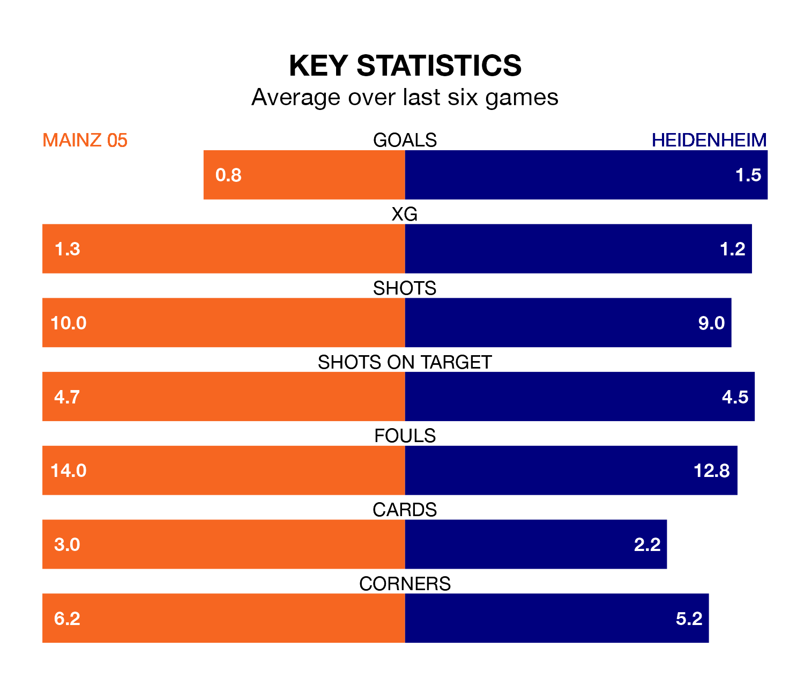

Heidenheim travel to Mainz 05 on early Saturday in the Bundesliga.
The visitors come into the game on the back of a win in their last match, having beaten Darmstadt 98 3-2 at home, with two goals from Patrick Mainka and one from Jan Schöppner.
Mainz 05, meanwhile, drew their last match, 0-0 against Köln.
Mainz 05 are 17th in the table after 14 games, of which they have won one and drawn six, earning nine points.
Heidenheim are four places ahead of the home team in 13th, with four wins and two draws putting them on 14 points.
The visitors' Jan-Niklas Beste is the league's most creative player, racking up seven assists in 13 appearances so far this season.
For Mainz 05, Karim Onisiwo has set up the most goals, having laid on three assists in 10 games.
With 12 goals in 14 games so far this season, Mainz 05 are the league's second-lowest scorers with 0.9 goals per game. And they are conceding more than average, letting in 26 goals at a rate of 1.9 per game.
Heidenheim are also below average scorers, with 1.5 goals per game, compared to a league average of 1.7. They have conceded 2.1 goals per game.
The hosts are in mixed form in the Bundesliga, with one win and four draws from their last six games.
With two wins and a draw over that period, Heidenheim's form is similar – they have both taken seven points from 18.
